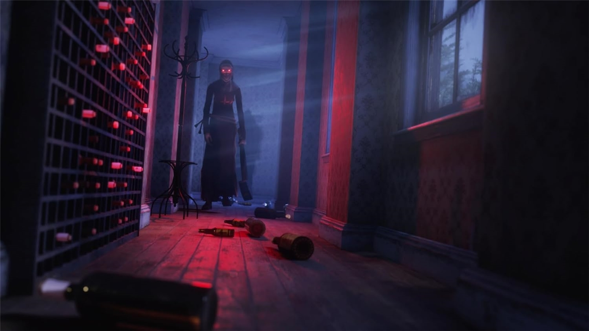

Overview
Screenshots


Responsibilities
- Ported the game to PlayStation, Xbox, and Nintendo platforms.
- Optimized performance to meet platform-specific technical requirements.
- Developed internal tools to streamline and accelerate the porting process.
- Implemented full gamepad controller support.
- Integrated platform trophy and achievement systems.
- Identified and resolved gameplay and platform-specific bugs.